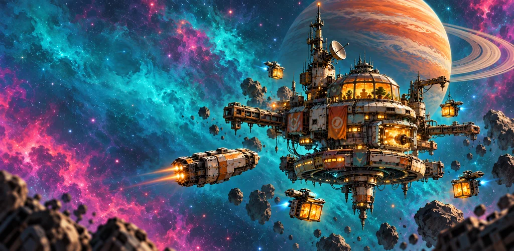
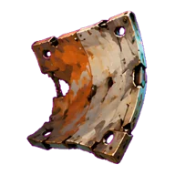
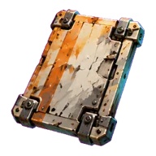
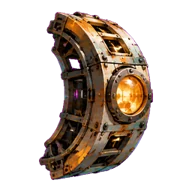
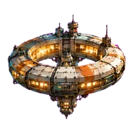
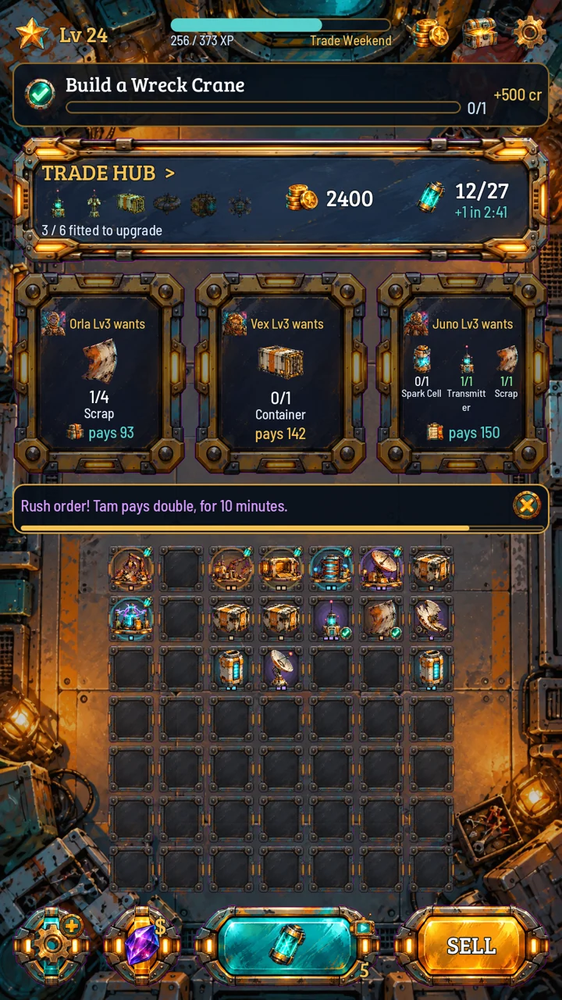
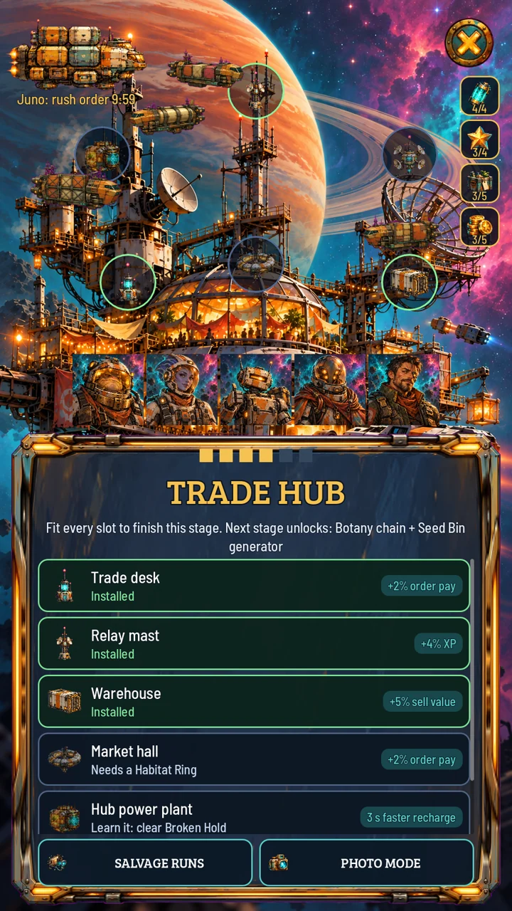
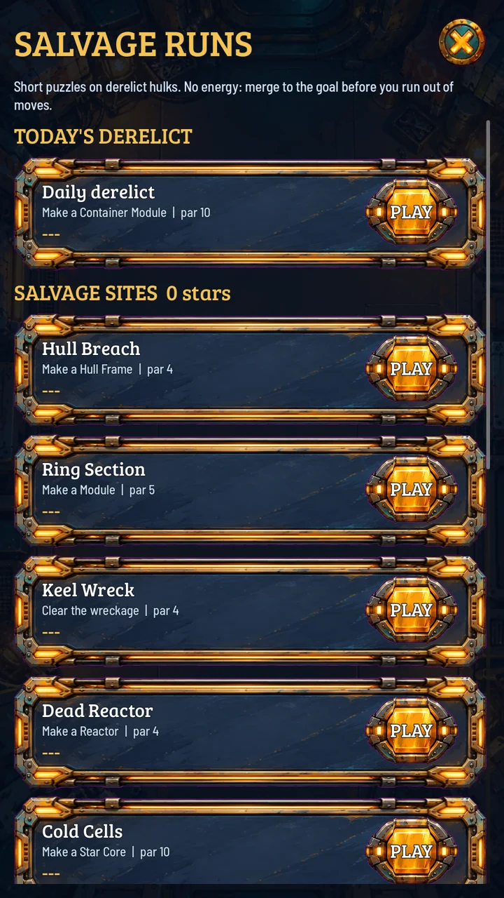
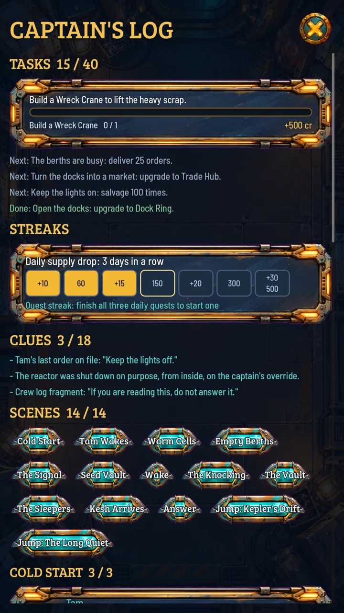

Find the perfect pair.
Merge identical parts into something better. Discover 35 collectibles across seven chains, from rusty scrap to miniature stars.

A COZY SCI-FI MERGE ADVENTURE
A little light in the dark.
A forgotten station. A sky full of possibilities.
Turn a handful of space junk into a place to call home.
Made for Android
01 / A NEW BEGINNING
Its reactor went quiet for a reason. Now the station is yours to restore, one part and one warm little light at a time. Meet its visitors, fit the pieces together, and find out what was left behind.




A little salvage goes a long way.
Merge identical parts into something better. Discover 35 collectibles across seven chains, from rusty scrap to miniature stars.
Fit parts into your station and watch it grow through six stages. Trade with six colorful visitors and make the frontier feel like home.
Explore derelict ships in short salvage puzzles. Piece together the Captain's Log, and discover what answers from the dark.
02 / LIFE ABOARD
Actual gameplay. A whole world
in the palm of your hand.




03 / ROOM TO BREATHE
A few merges over coffee. A salvage run on your break. Come back to a little more energy and a station ready for your next idea.
The full game is playable for free. Ads and purchases require a connection.
English, Spanish, German, French and Portuguese.
FROM THE STUDIO / SYNAPSE ONE
Questions, feedback, or a hello from the frontier?
We'd love to hear from you.